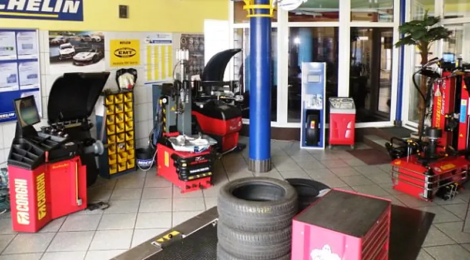
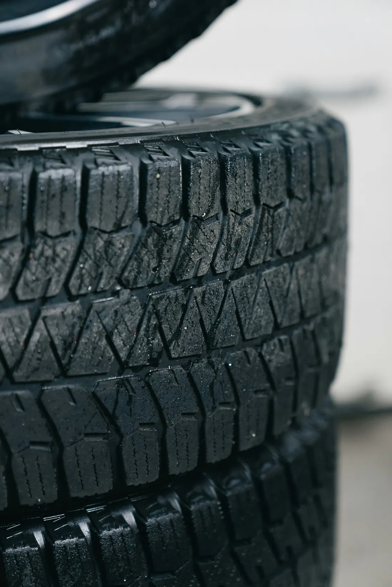
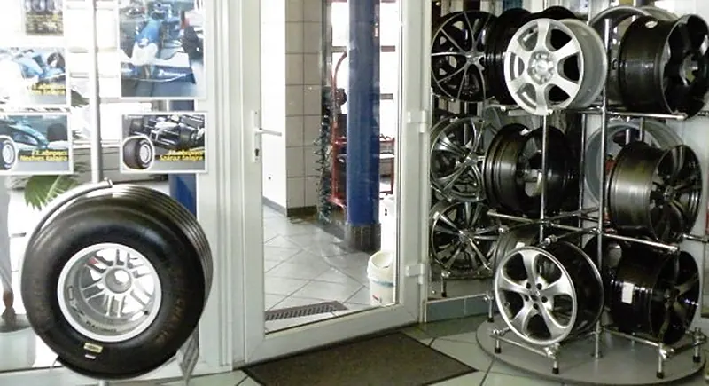
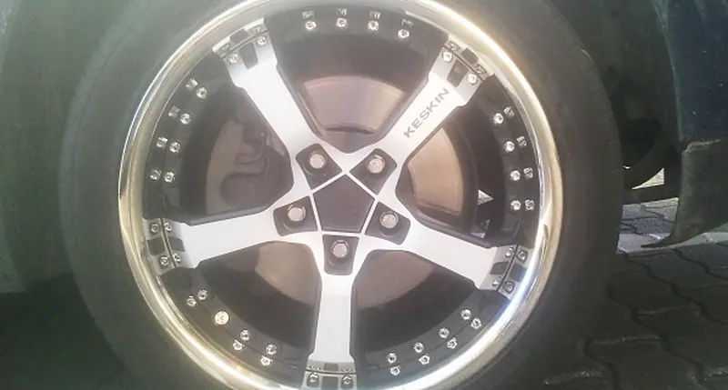
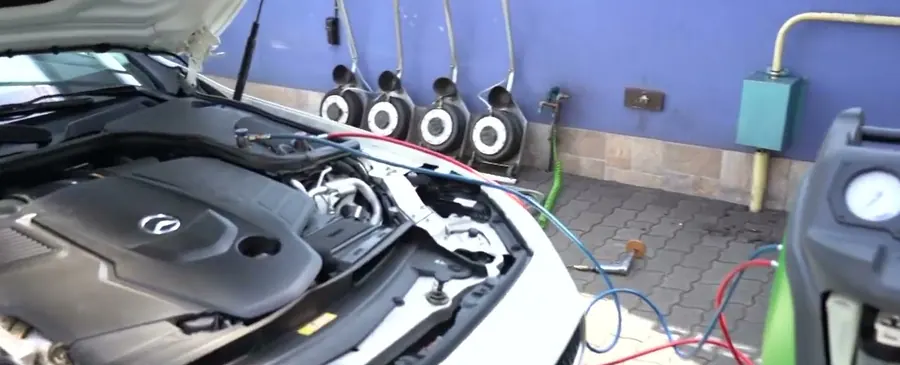
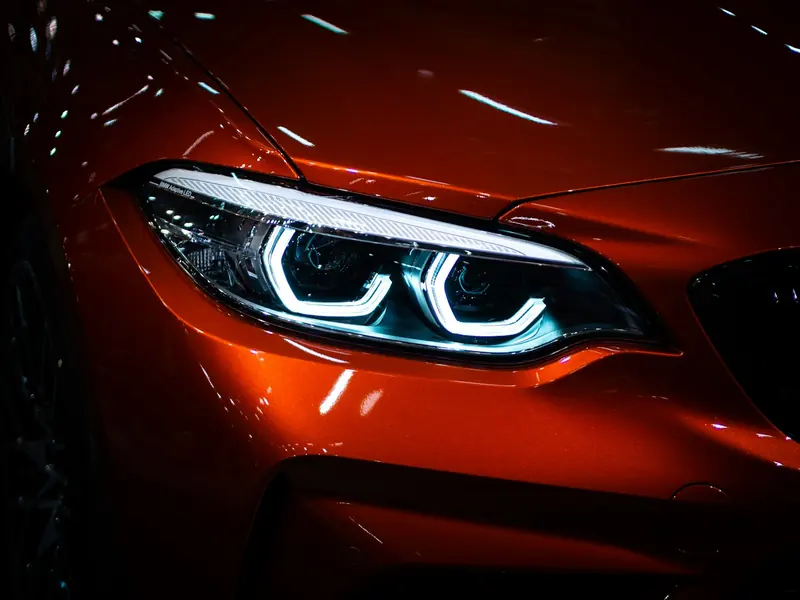
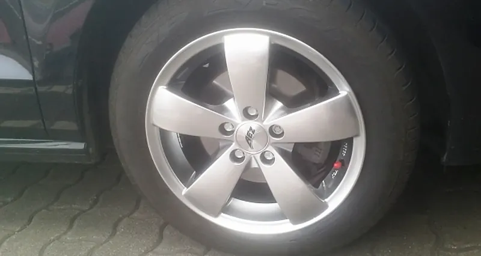

Gumiszerelés és centírozás
Az extrém méretű keréktárcsákat is sérülésmentesen, precízen szereljük, 12″-től 26″-ig.
4 250 Ft-tól / kerék
1997 óta a Pécsváradi úton
Korszerű Corghi és Sicam gépeken szerelünk és centírozunk, 12-től 26 colig – akár defekttűrő abroncsot is.
4,7 · 78 Google-vélemény

Gumi- és klímaszerviz egy helyen, a város autókereskedelmi központjában.

Az extrém méretű keréktárcsákat is sérülésmentesen, precízen szereljük, 12″-től 26″-ig.
4 250 Ft-tól / kerék

Gépi kerékmosással, szakszerű tárolással és ingyenes állapotfelméréssel – nem kell az autóban hurcolni a gumikat.
2 500 Ft/ kerék / szezon

A deformálódott felni rázza az autót. Görgőzéssel javítjuk – szezonon kívül helyben megvárható.
6 000 Ft-tól

Töltés számítógép-vezérelt automatával, grammra pontosan, és ózonos klímatisztítás vegyszer nélkül.
8 000 Ft ózonos tisztítás

A besárgult, matt lámpabúrát szinte újszerűre polírozzuk – jobb látás, és a műszaki vizsgán sem akad meg.
7 500 Ft/ db

Ingyenes szaktanácsadás és abroncs-állapotfelmérés, nitrogénes gumitöltés a stabilabb nyomásért.
Ingyenes átvizsgálás
Árak a 2025. február 1-től érvényes árlistánk szerint. A pontos árért érdeklődjön üzletünkben.
Három kattintás, és látja a 4 kerékre vonatkozó árat a hivatalos árlistánkból. Utána egy gombbal időpontot kérhet.
1Mekkora a felni?
2Milyen a felni?
3Mit kell csinálni?
Kezdetben magánvállalkozóként, 1997 óta Baranya Gumiszerviz Kft. néven foglalkozunk gumikereskedelemmel és -javítással. A város autókereskedelmi központjában nyitottunk korszerű műhelyt.
„Ma random bementünk, és kb. 20 perc múlva hívtak is minket, hogy kész a felni. … korrekt, profi kiszolgálás.”Google-vélemény
„Segítőkész és barátságos. Jó tanácsokat adtak, és együtt gondolkodnak veled.” A megrendelt gumi másnap megjött, azonnal telefonáltak.Google-vélemény
„A délelőtt leadott rendelésem másnap este meg is érkezett, és csúcs, hogy friss gyártású!”Webáruházas vásárló
4,7 átlag 78 Google-vélemény alapján · Vélemények a Google-on
Válassza ki, miben segíthetünk, adja meg nevét és telefonszámát, és munkatársunk egyezteti Önnel az időpontot.
Más kérdése van? Hívjon minket: 06 72 239 404.
Szezonon kívül igen, a felnijavítás helyben megvárható. Klimatizált váróban várhat.
Komplett kerekeknél gépi kerékmosást, szakszerű tárolást, ingyenes állapotfelmérést és állagmegóvást. További díjért a kerekeket kicentrírozva tároljuk, hogy szezonváltáskor menetkészen várják Önt.
Igen. A nem nálunk vásárolt, új, hozott abroncsok felszerelési árát az árlistánk tartalmazza.
A hatályos jogszabályoknak megfelelően kizárólag cink- vagy acélsúlyokkal. Sicam és Corghi kerékkiegyensúlyozó gépeinken 1 grammos pontossággal centírozunk.
Igen, webáruházunkban regisztráció nélkül. A DPD futárszolgálat házhoz szállítja, a szállítási díj 1500 Ft/db; a rendelést személyesen is átveheti az üzletben.
Hétfőtől péntekig 8:00–17:00 között, szezonban szombaton 8:00–12:00 között is. Munkaidőben mindig felvesszük a telefont.